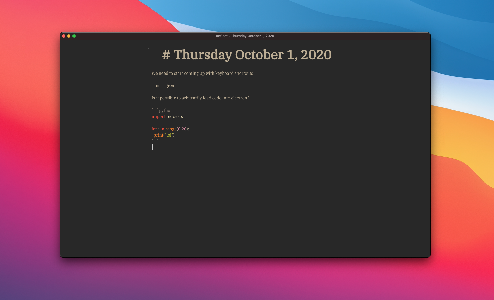

I’m living my best life. I don’t know how else to put it but I can’t stop smiling.
That climb just got me so fucking psyched about life. It was just one of those days where you fucking crush the climbing. Ran up an 11c like it was a 10c lmao ok. Biking before climbing is 💯. I was ready to get away from my computer and it was the perfect break.
Basically played with Electron all day long. I don’t have any experience with node really so this has been a struggle for me. I’ve just been reading a lot of code to figure out what I should be doing.
Create a main.js and index.html.
I guess it makes sense, but all the client side code is going to go in in the index.html. So for example I wanted to use CodeMirror for basic display of markdown. I want to have this in the index.html. Basically only runtime and OS logic needs to be on the main.js side as far as I can tell.
Welcome to the new world.
All of this GUI programming has been wild for me. Even SwiftUI was a whole new paradigm.
I also found out that you should always include <!DOCTYPE html> otherwise nothing will behave as you expect. I was about to tear my hair out. This one missing tag fixed all my worries. Fuck.

So it turns out getting things done is pretty easy nowadays as long as you are willing to struggle and want to blast your brain.
What do I have? (lol basically nothing but also something)
Basically all of this is to say CodeMirror is dope as fuck. Looking forward to learning more about it. However I also see the value in having a different mardown parser to style more effectively inline, but I am not sure what that is going to look like yet. Will need to explore more markdown libraries. I think for now I don’t care too much about this.
I am going to have it start importing other things (podcasts, notes, etc) hopefully soon. Basically dashboard + this. Both from my local machine as well as the database. How to do this? No idea. What it’s going to look like? No idea. How to spawn thoughts outside of this and have them be evergreen? No idea. How to get autocomplete suggestions like VSCode (and language servers) but for english?!!!! NO IDEA. BUT. BUT. BUT. I had no idea this morning how the fuck to use Electron, and while I am still a clueless sack of meat I have a better idea than I did.
I do want to experiment with alternative forms of input as well but that will come later. I also really need to think about how the hell I am going to have someone else deploy this… I mean I need to figure out how I want to do it for myself first. I still am not sure. I am liking VSCode a lot right now, but I think there can be a cleaner mechanism. Git might end up just being a backup (where you could run a static site from), but likely it will be served on a server. Both are viable. I just like to run my own servers because I am running 1000 different things in parallel already and I don’t want to futz with more configuration than is really necessary.
HAHAHAAHAHAHAHAHH YOU THINK YOU KNOW DONT YOU. FUCK YOU. TOMORROW YOU DO WHATEVER YOU WANT AND IT WILL BE A GOOD DAY. MANY THINGS TO DO. PROBABLY SHOULD ORGANIZE NOTES FOR REAL, BUT YOU KNOW HOW THAT TURNS OUT. IT TURNS OUT WITH YOU WORKING ON SOMETHING THE WHOLE DAY HAHAHAAHHHHHHHHHHHHHHHHHHHHHHHHHHHHHHHHHHHHHHHHHHHHHHHHH